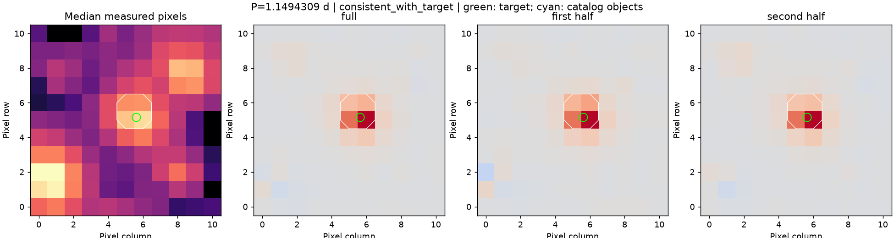
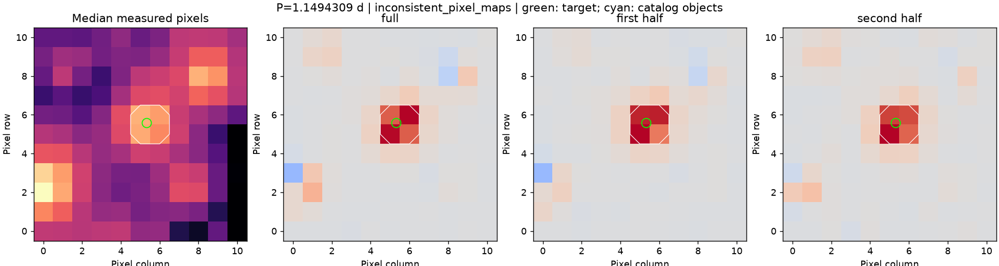

组别：目录食双星；分析状态：分析完成。
选定光度周期：1.1494309478308238 天；目录轨道周期：1.1494575710550459 天；比较：与目录周期一致。
来源处理：来源证据不足。目录组也需要独立来源核验。


The compact positive coherent signal covers the same central pixel block around the target in all three maps. The brightest individual pixel changes diagonally between [6,6] and [5,5], triggering the 1-pixel stability threshold even though every peak remains within 1 pixel of the target. Keep the frozen source_evidence_required result; this is not proof of an off-target source. The peak-pixel method is sensitive to grid sampling and has no calibrated localization uncertainty.
备注范围和证据校验值。这些补查没有修改原预测，也不是完整的独立标准答案。
目录邻星信息只覆盖 TESS-EBs v1.0。位置相符不排除未分辨近邻；目录周期的半/双倍关系需人工辨别。尚未完成独立裁定，也未查首次发现资格。